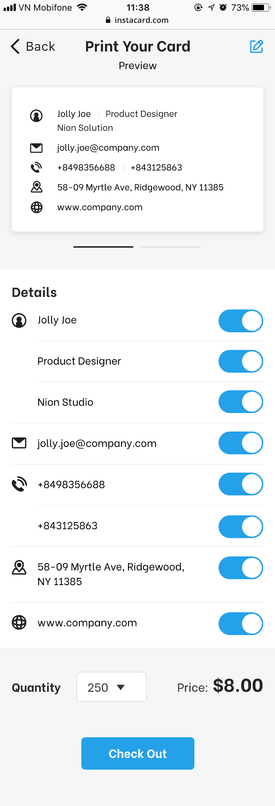

Nhiều kênh. Nhiều thao tác.
Contact, portfolio và social nằm rải rác. Giả thuyết: người dùng cần một danh tính chuyên nghiệp gọn trong một link.
BCA DESIGN TEST / UX + UI / 01 OPTION
Một danh thiếp nhỏ. Một kết nối có ý nghĩa. Thiết kế InstaCard giúp người dùng hiểu sản phẩm, hình dung cách chia sẻ và đăng ký quan tâm mà không bị ngắt mạch cuộc trò chuyện.
Desktop 1440 · Mobile 390 · Không prototype app
01 / PROBLEM & INSIGHT
Contact, portfolio và social nằm rải rác. Giả thuyết: người dùng cần một danh tính chuyên nghiệp gọn trong một link.
Yêu cầu tải app có thể làm gián đoạn trao đổi. Đề xuất: QR/link → browser card → Save contact, không ép đăng nhập.
Nhập lại tên, email hay ký tự lạ có thể sai. Đề xuất: lưu dữ liệu gốc, không phụ thuộc OCR hoặc gõ lại.
Phương pháp: desk research + phân tích brief/screenshots. Chưa phỏng vấn người dùng, chưa đo conversion hoặc usability. Các pain point/insight không phải kết quả nghiên cứu người dùng đã kiểm chứng.
02 / RESEARCH → DESIGN
| Reference | Quan sát | Chuyển thành thiết kế |
|---|---|---|
| Linktree | Nhiều kênh trong một link | “One link. All of you.” + social trên card |
| HiHello | Người nhận không cần app | Reassurance cạnh CTA hero |
| Blinq | QR/link dẫn tới lưu contact | 3 bước Make → Share → Save |
| WorldCard Mobile | OCR và nhận diện đa ngôn ngữ | Phân biệt bằng dữ liệu nguồn, không hứa dịch thuật |
| 21st.dev / CardStack | Composition card xếp lớp | Hero tĩnh, không drag/autoplay; code tự triển khai |
Bizz Card: URL do brief cung cấp không truy xuất được; không đưa nhận định tính năng. Nguồn truy cập 22/09/2026. Không sao chép social proof của đối thủ.
03 / CONCEPT & SYSTEM
Headline nói đúng sản phẩm, 1 CTA chính, lợi ích no-app ngay đầu trang.
Card identity, social links và typography có cá tính nhưng dễ đọc.
Form một trường, khoảng trắng rõ, không chuyển động gây phân tâm.
Bricolage Grotesque cho heading · Instrument Sans cho nội dung. Grid tối đa 1248px, 8px spacing base. Desktop hero 2 cột / benefits 3 cột; mobile form và nội dung trước card / benefits 1 cột.
Giữ nguyên logo SVG. Không dùng claim “173 cây/ngày” khi thiếu nguồn. Google/Microsoft sync ghi rõ planned. Không dùng testimonials hoặc số người dùng giả.
04 / SITEMAP
Landing được thiết kế UI. Các khu vực app bên dưới là đề xuất kiến trúc từ brief và screenshot, chưa được xây thành sản phẩm.
Account, privacy, checkout review và order status bổ sung các khoảng trống cần thiết của journey. Không đề xuất thêm admin khi brief chưa yêu cầu.
05 / USER FLOW — ACQUISITION
06 / USER FLOW — CORE PRODUCT
07 / USER FLOWS — EXTENSIONS
| Journey | Happy path | Recovery / guardrail |
|---|---|---|
| Premium | Feature gate → benefits → month/year → review giá/gia hạn → checkout → confirmed → back to editor | Cancel/decline không mất card. Pending không charge lại. Giá screenshot cần duyệt lại. |
| Print settings → front/back proof → quantity → delivery → total review → checkout → status | Logo mờ → thay ảnh. Thiếu delivery → inline error. Giá đổi → xác nhận lại. Không tạo order trùng. | |
| Privacy | Settings → public fields → preview → save | Unpublish/delete cần xác nhận hậu quả, recipient không thấy trường private. |
| Account | Sign in → intended task / Settings → billing | Reset password → return-to; access denied/help có lối quay lại. |
08 / SUPPLIED PRODUCT EVIDENCE



Các ảnh gốc client cung cấp được giữ nguyên 100% và hiển thị như image layers. Text, heading và layout xung quanh vẫn là HTML editable khi convert sang Figma.
09 / VALIDATION PLAN
Các kiểm chứng người dùng trên là PLANNED. Browser/layout QA trong QA report không thay thế usability testing.
Xem landing page ↗